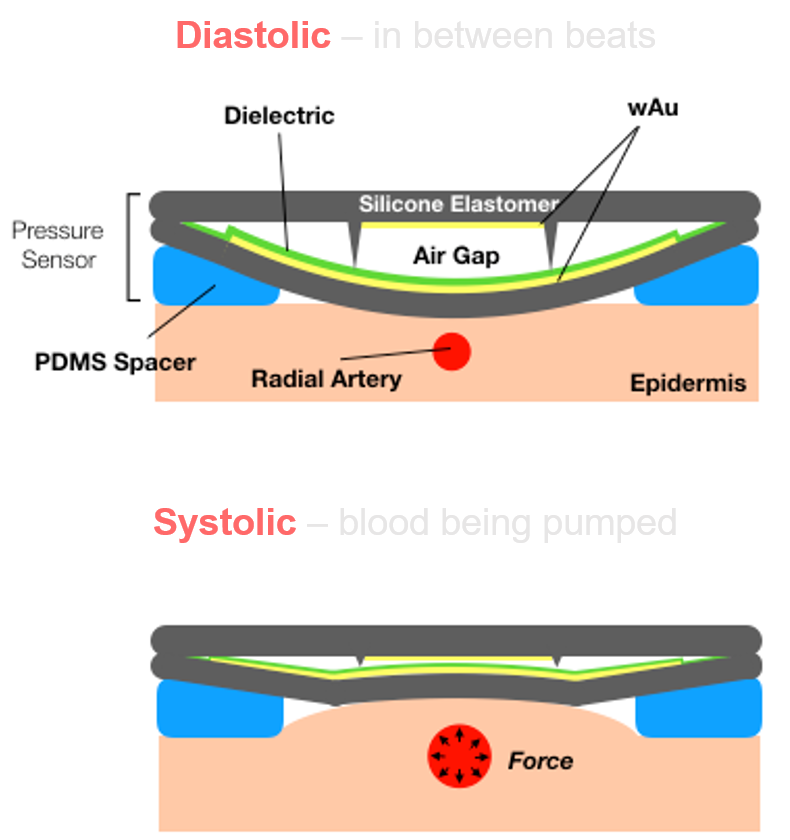

Clinical Advisory Board
Clinical advisory board

Clinical Validation
VeriTrack has been validated across 300+ operating room patients [VERIFY] at 6+ academic and community hospital sites. In direct comparison against the invasive radial arterial line, the clinical gold standard for continuous pressure, VeriTrack tracked beat-to-beat hemodynamic changes across a wide range of patients and surgical cases.
Validation Program
Our validation program spans 6+ academic and community hospital sites, including UC Irvine, University of Vermont Medical Center, UCSF, and Henry Ford, with studies comparing VeriTrack directly against the invasive radial arterial line in OR patients undergoing general anesthesia. The validation follows AAMI ISO 81060-2 methodology for comparison against an arterial reference. Data from our design freeze studies demonstrate accuracy within ISO 81060-3 standards. In cases where the arterial line dropped signal due to clotting or required repeated flushing, VeriTrack maintained a clean continuous trace. Full study results are forthcoming.
OR patients [VERIFY]
Hospital study sites

Research Pipeline
Prospective comparison in surgical patients across multiple OR settings.
Characterizing blood pressure variability in congestive heart failure patients.
Algorithm development to filter motion artifact from continuous waveform data.
Feasibility of continuous noninvasive BP in the emergency department setting.
Blood pressure variability as a biomarker in stroke and dementia populations.
Standards
Validation follows AAMI ISO 81060-2 methodology for comparison against an arterial reference. Head-to-head beat-to-beat comparison with the radial arterial line in the operating room.
Radial arterial line (invasive intra-arterial catheter), the current gold standard for continuous blood pressure monitoring.
Clinical Advisory Board